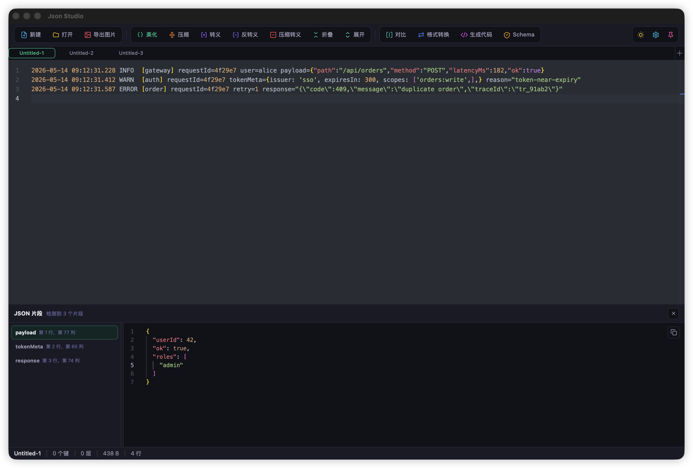
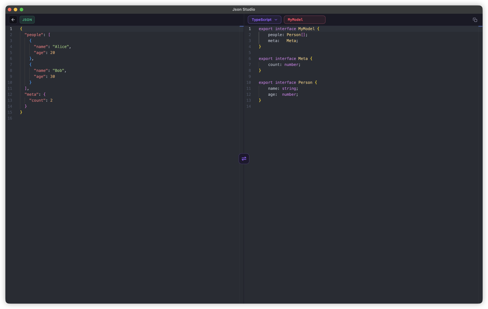

专业级桌面 JSON 工作站
JsonStudio
专为日常开发打造的高效、现代桌面 JSON 应用，一站式解决所有JSON处理工作，重塑你的开发效率。
专为日常开发打造的高效、现代桌面 JSON 应用，一站式解决所有JSON处理工作，重塑你的开发效率。
JsonStudio 面向开发者每天遇到的数据：接口请求/响应、复杂嵌套结构、转义字符串、类 JSON/JSON5 片段，以及普通日志文本和 JSON 混在一起的内容。
无需联网、无需在繁杂的浏览器标签中翻找，免受广告打扰，杜绝数据上传风险。您的敏感 JSON 数据始终留在本地设备，结合原生快捷键、窗口置顶和本地文件处理，带来极致流畅的工作体验。
从容应对严格的 JSON、类 JSON5 语法、转义字符串、尾逗号、无引号键以及可修复的残缺片段，并支持粘贴时自动格式化。
借助树状视图、JMESPath/JSONPath 查询、实时统计与并排 Diff 功能，让庞大复杂的 JSON 数据清晰易读、验证无忧。
多标签页编辑、未命名文档自动编号、复用已打开的标签页、未保存提示、自动保存、拖拽打开与文件关联，一切如桌面原生般自然。
内置美化、压缩、转义、反转义、折叠/展开、Schema 生成与校验、格式转换以及强类型代码生成等常用功能。

专为日常 JSON 工作打造：格式化、查看、查询、日志提取、Diff、转换、Schema、代码生成、压缩/转义，一站式完成。
基于 Monaco Editor（VS Code 编辑器内核）打造，提供顶级的 JSON/JSON5 格式化、美化与查看体验。

将复杂的 JSON/JSON5 结构可视化为交互式树形图，轻松导航、搜索和查询。

面对日志、报错堆栈、接口调试文本，不再需要手动复制大括号片段。JsonStudio 会识别其中的结构化数据，并保持原文不被替换。

在桌面工作流中无缝完成 JSON 与其他常见数据格式的相互转换。

从 JSON 快速生成类型安全的模型代码，或从目标代码片段中反向提取 JSON。

从任意 JSON 数据一键生成 Schema，或用现有 Schema 验证数据，并在专属视图中完成操作。

原生桌面能力让 JSON 工作更贴近日常开发：打开、保存、监听、复用标签页都更顺手。

围绕 JSON Diff、压缩/转义、修复与导出的实用工具箱。

每个细节都为开发者效率而打造。
一键自动修复无效 JSON——修复缺失引号、尾逗号等常见问题。
从日志和混合文本中识别 JSON、JSON5、转义 JSON 与可修复片段。
文件型标签页可自动保存改动，关闭未保存内容前会弹出确认。
编辑器、格式化、树视图和粘贴处理都能理解更宽松的 JSON5 语法。
安装包小、内存占用低，基于 Tauri 和 Rust 构建。
不到一秒即可启动，无加载画面，无需等待。
支持 macOS、Windows 和 Linux，原生外观和体验。
Dracula、Nord、One Dark、Solarized 等，一键切换明暗主题。
导出 JSON 为带语法高亮的美观图片，便于向他人分享，基于 Rust 原生渲染引擎。
实时显示键数量、嵌套深度、字节大小和行数。
完整的中英文界面，一键切换语言。
所有数据留在本地，无服务器、无上传，完全保护隐私。
看看 JsonStudio 与在线 JSON 工具和其他编辑器的对比。
| 功能 | 在线工具 | JsonStudio |
|---|---|---|
| 离线使用 / 无需联网 | ✗ | ✓ |
| 数据隐私（100% 本地处理） | ✗ | ✓ |
| 大 JSON 数据性能 | ✗ | ✓ |
| 多标签页编辑 | ✗ | ✓ |
| 树视图与 JMESPath / JSONPath 查询 | ✗ | ✓ |
| 日志混合文本 JSON 提取 | ✗ | ✓ |
| JSON5 解析与格式化 | ✗ | ✓ |
| 文件自动保存与标签页复用 | ✗ | ✓ |
| 无广告体验 | ✗ | ✓ |
| 全局快捷键与自定义键绑定 | ✗ | ✓ |
| 图片导出 | ✗ | ✓ |
| 本地文件操作 | ✗ | ✓ |
| 自定义设置（主题、字号、间距、快捷键等） | ✗ | ✓ |
| JSON Schema 生成与验证 | ✓ | ✓ |
| 代码生成 | ✓ | ✓ |
| JSON Converter（YAML/XML/...） | ✓ | ✓ |
| JSON Diff | ✓ | ✓ |
利用最佳工具实现高性能、安全性和开发者体验。